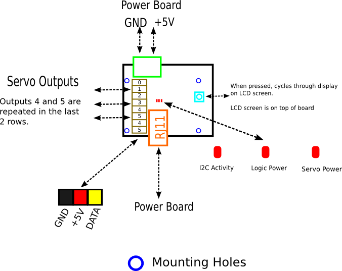
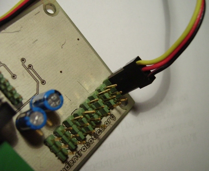

PWM Board
Servos are mechanical armatures which can be commanded to move to a given angular position. They are useful when positional accuracy is required, for example when attempting to pick up a token from the arena floor. The PWM board allows you to control multiple servos on your robot. To see what can be achieved with servos see this Servo Robot Arm project.
In addition to driving servos, the PWM board has an alphanumeric display which can display arbitrary lines of text - very useful when debugging your robot!
Board Outline
The PWM board outline is shown below in Figure 1:

Figure 1 - 1:1 Scale Board Outline of PWM Board
Technical Specification
- Provides 6 independent servo channels
- Servos must be rated 5 Volts
- LCD Alphanumeric module with 2 lines of 24 characters
Connecting Servos
Servos are connected to the PWM Board using the bank of vertical pin headers on the top side of the board as shown in Figure 2. Each row of three pins corresponds to a single servo output. Be careful to ensure that the polarity is correct before connecting. Almost all servos come with this 3-wire connector and you should not need to do any extra work to connect them to the PWM Board.

Figure 2 - Connecting a Servo to the PWM Board
Duplicate Outputs
Although there are eight rows of pin headers on the PWM Board, the last two headers are duplicates of servos 4 and 5 - this is illustrated in the board outline. Unless you need two servos to behave identically, you should not need to use these duplicate outputs.
The LCD Module
During testing you may want to write text to the LCD from within your python robot code. This could help to determine how far into your program you are. Other possibilities include:
- Write a message to LCD when camera detects a blob
- Writing error messages to the LCD
- Show alert when sensors detect wall/ball
- View JointIO input/output status
The display supports pages of text called 'screens'. You can have up to four different 'screens' at the same time however, only one will be visible on the display. Pressing the push switch on the board allows you to cycle through each screen in turn. This is useful since you could dedicate a screen of text to each module (vision, motor, jointio, pwm).
Connecting the LCD Module to the PWM Board
The LCD module connects to the screen using the blue ribbon cable supplied in your kits. The cable can only be connected in one orientation, so be sure to line up the connectors correctly. Figure 3 shows how to connect your LCD module to your PWM board.
WARNING: Do not connect/disconnect the LCD from the PWM board whilst your robot is switched on!
Troubleshooting
Servos Do Not Move
Have you ensured the polarity of the servo connector matches with Figure \ref{fig:outline}? Is the 5V rail connected to the Power Board? Is your servo connected to the correct pin header?
PWM Screen Is Blank
Have you connected the LCD module to the PWM Board using the ribbon cable as in Figure 3? Is the 5V rail on the PWM Board connected to the Power Board? Are you looking at the correct 'screen'? - cycle through the screens by pressing the button.
Programming Interface
Writing to the screen